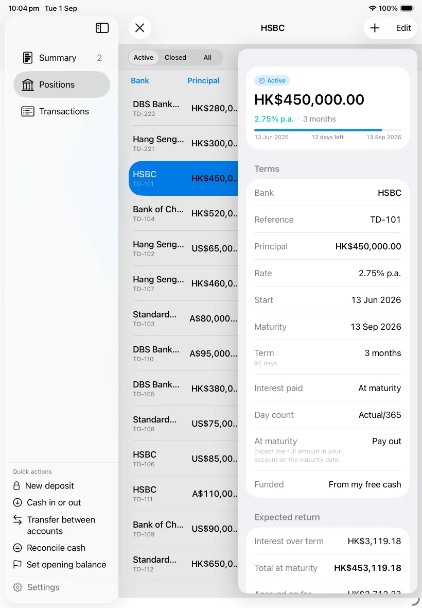
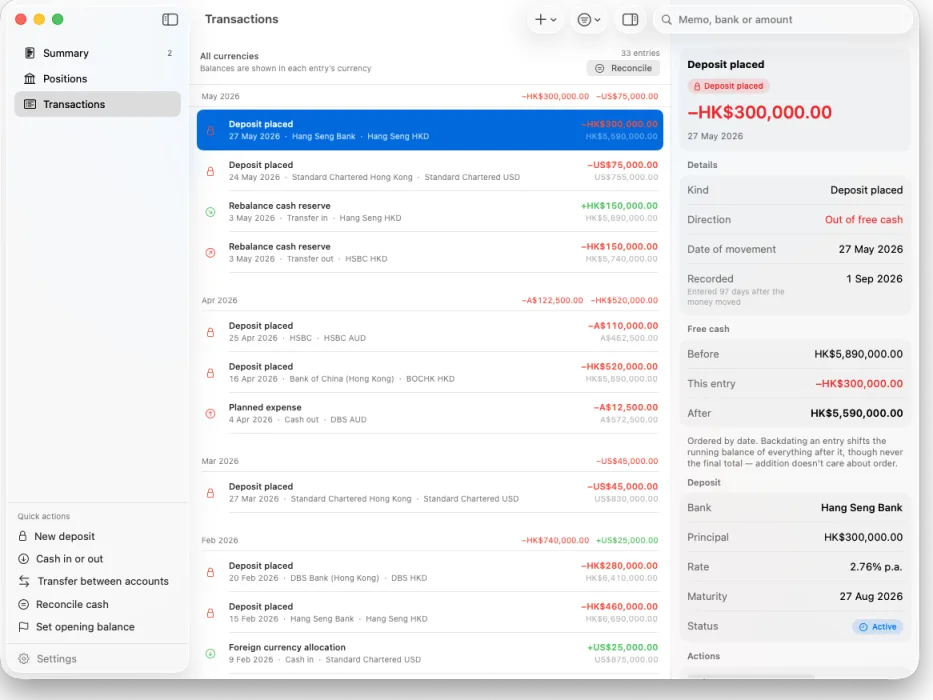

所有资金一次返还
从存入到到期之间，没有本金安排返还。 整个持仓组合都需要在同一天重新作出决定。
如果把一大笔资金存入一笔长期定期存款，中间数月可能完全没有本金返还。 这样或许能赚取利息，但也会把流动性集中在同一个日期。
从存入到到期之间，没有本金安排返还。 整个持仓组合都需要在同一天重新作出决定。
返还的本金分散在日历中。你可以查看每个期间将返还的金额， 再决定下一笔资金如何存入。
Maturity 将今天的当前可用资金和已记录的未来 12 个月到期情况汇集在一个视图中。 它为你呈现安排；每一笔存款决策仍由你自己作出。
当前可用是所选货币在交易账本中的准确合计。 打开后即可查看现在究竟可以从哪个账户和哪家银行拨出资金存入定期存款。
到期阶梯按月或按季度显示将返还的本金和利息。 空白期间也会保留，因为这些空档解释了持仓组合的结构。
添加你选择的定期存款。如果资金要等到之后的月份使用，已记录的短期定期存款会保留在安排中， 直到资金再次可用。
同一个月度视图可以支持这两种方式。Maturity 会呈现你的金额、日期和空档； 它不会推荐金额、存款期、利率、产品或金融机构。
摘要回答当前有多少资金可用以及接下来会返还什么。持仓保留各项存款条件， 交易则解释现金余额的每一次变动。


定期存款会续存，现金会在银行之间转移，利息报价会有差异，不同货币也不能如实地直接相加。 Maturity 会明确保留这些细节，而不是将它们模糊处理。
现金按账户和银行追踪。转账会分别记录转出的金额和到账的金额， 核对则记录账本与银行所示余额之间的差额。
记录全部或部分续存，将部分所得保留为现金，或提前支取定期存款， 同时保留通知期和金融机构的最终报价。
原始货币金额始终是权威数据，绝不会直接相加。 比较利率、闲置现金比例和剩余存款期，而不假装不同货币可以合为一个余额。
不同产品采用不同的计息天数基准。Maturity 默认使用实际天数/365， 每笔定期存款也支持实际天数/360和 30/360。每个计算结果都是起点，你可以用银行报价替换。
金额以整分储存，利率以整基点储存。你的余额是所有交易的准确总和， 而不是浮点近似值。
| 存款期 | 基准 | 利息 |
|---|---|---|
| 365 天 | 实际天数/365 | $4,850.00 |
| 90 天 | 实际天数/365 | $1,195.89 |
| 90 天 | 实际天数/360 | $1,212.50 |
基准会改变计算结果。请选择每种产品注明的惯例； 如果你的金融机构采用不同算法，请替换估算值。
Maturity 没有由开发者运营的服务器，无需创建账户，也不使用分析工具。 你的记录始终由你掌控。
记录保存在你的 iPhone、iPad 和 Mac 上；条件允许时， 通过 CloudKit 在你自己的私密 iCloud 容器中同步。
Maturity 不连接金融机构。每条记录都由你自行输入， 因此无需向应用提供银行登录信息。
没有分析 SDK、广告标识符或第三方崩溃报告。启用参考换算后，参考汇率提供商只会收到 所请求的货币代码和普通连接元数据，绝不会收到持仓金额或记录标识符。
从当前可用资金开始，查看接下来会返还的资金， 并让每笔新存款都与周围的持仓组合保持联系。